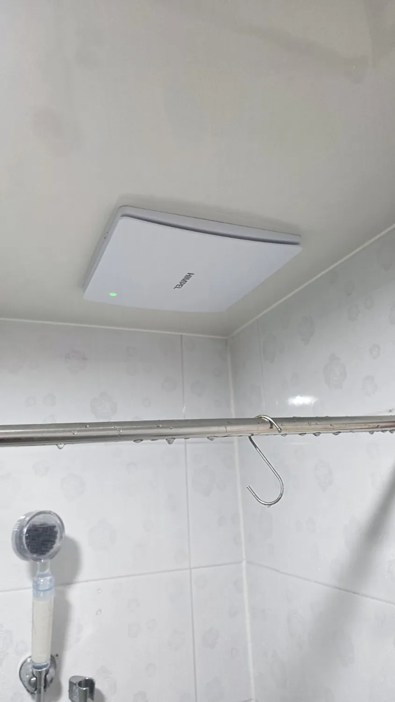
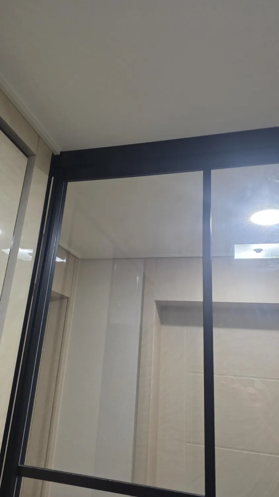
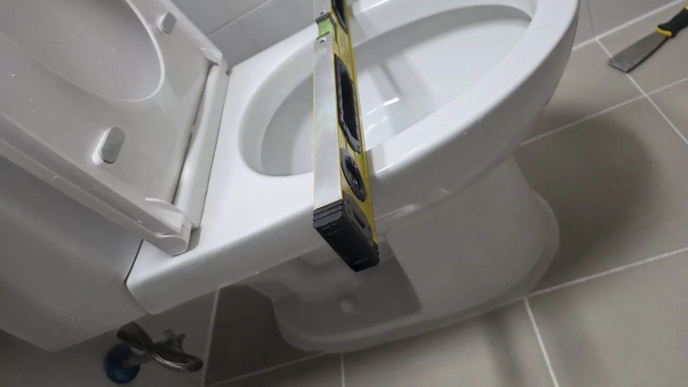
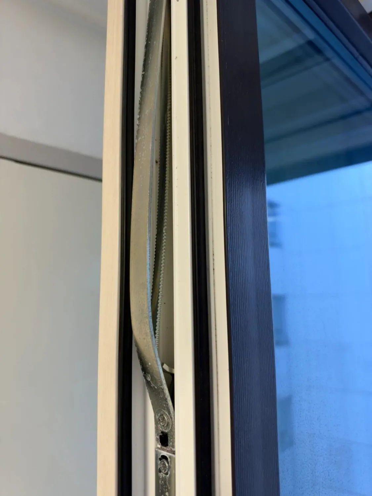
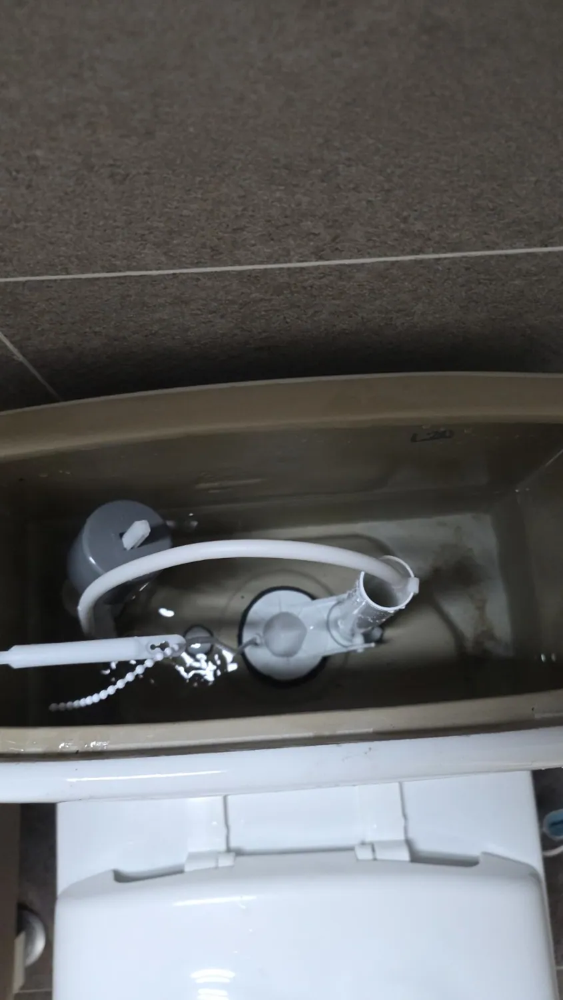
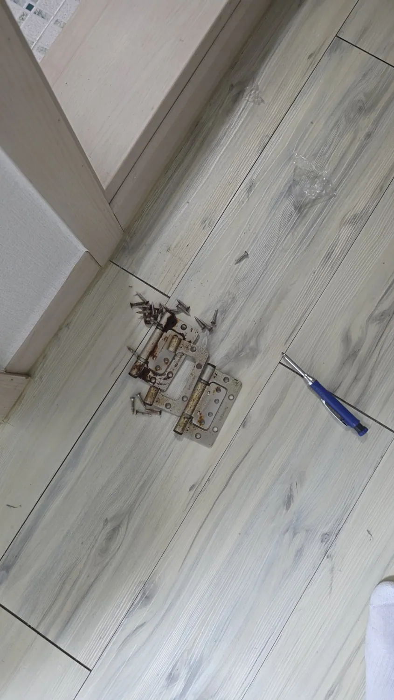
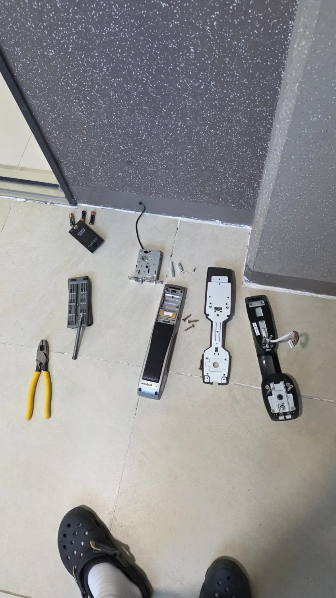
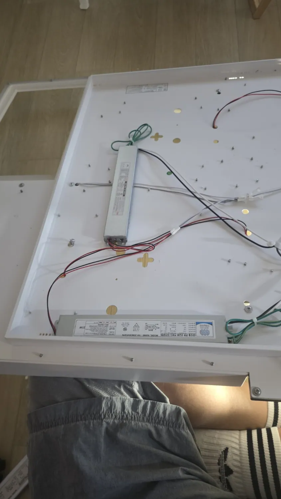
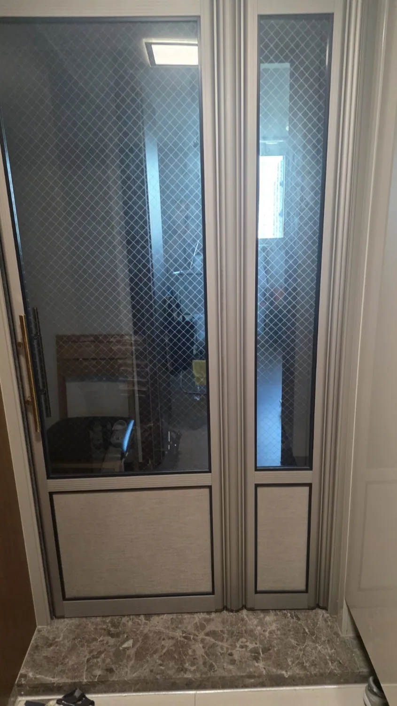
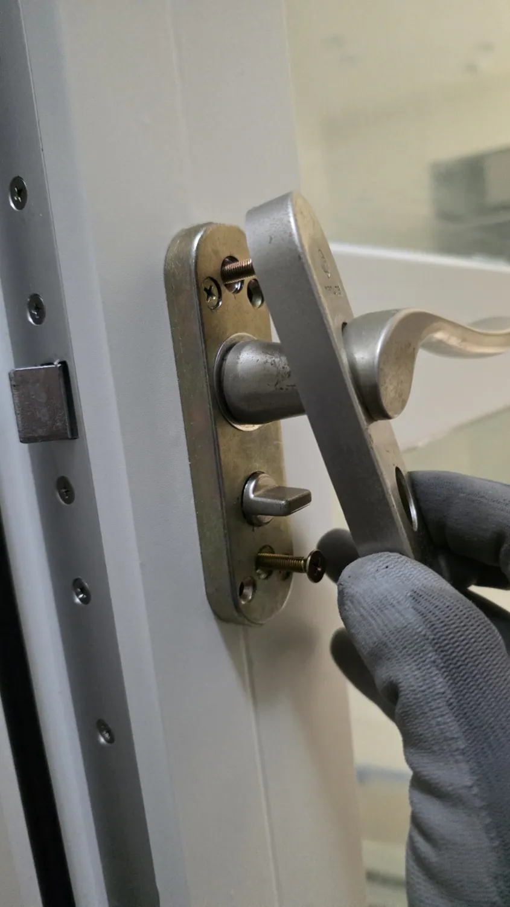

집수리 서비스 안내
LED 리폼, 안정기 교체, 점등 불량 점검
스윙도어 기어, 중문 부속, 터닝도어 손잡이
변기 부속, 환풍기, 욕실 방문 교체
디지털 도어락 교체 및 설치
주방·욕실 수전, 배수 트랩 및 부속
주방 설비, 건조대 및 기타 생활 수리
실제 시공 사례 11건
직접 촬영한 현장 사진을 모았습니다. 각 사례를 눌러 작업 사진을 자세히 확인하세요.
블로그에서 더 많은 시공 후기 보기
욕실 힘펠 환풍기 교체
기존 환풍구 상태를 확인하고 힘펠 환풍기를 설치한 사례입니다. 설치 위치와 마감 상태를 사진으로 확인할 수 있습니다.
사진 5장 자세히 보기 →

중문 상부 레일 및 부속 점검
중문 상부 레일과 부속 상태를 확인한 작업 사진입니다. 정확한 교체 부품은 확인 후 보완할 예정입니다.
사진 3장 자세히 보기 →

양변기 설치 및 수평 확인
변기 설치 과정에서 수평을 확인하고 하단 마감 상태를 점검한 사례입니다.
사진 7장 자세히 보기 →

터닝도어 잠금 부속 점검
터닝도어 측면 잠금 부속과 문짝 구조를 점검한 현장 사진입니다.
사진 7장 자세히 보기 →

변기 물탱크 내부 부속 교체
변기 물탱크 내부 부속을 분리하고 교체하는 과정을 담았습니다.
사진 4장 자세히 보기 →

욕실 방문 및 경첩 교체
기존 욕실 방문을 분리하고 새 문짝과 경첩을 설치한 사례입니다.
사진 8장 자세히 보기 →

식탁 펜던트 조명 LED 리폼
기존 펜던트 조명의 외관을 유지하면서 내부 조명 부품을 LED로 리폼한 작업입니다.
사진 6장 자세히 보기 →

현관 디지털 도어락 교체
기존 현관 도어락을 철거하고 새 디지털 도어락을 설치한 사례입니다.
사진 8장 자세히 보기 →

거실 LED 조명 안정기 교체
기존 디자인 조명을 유지하고 안정기를 교체하여 점등 상태를 확인한 사례입니다.
사진 10장 자세히 보기 →

스윙도어 중문 상·하부 기어 교체
스윙도어 중문의 상·하부 기어 부품을 교체한 수리 사례입니다.
사진 7장 자세히 보기 →

터닝도어 손잡이 교체
기존 터닝도어 레버 손잡이를 분리하고 새 손잡이를 장착한 사례입니다.
사진 4장 자세히 보기 →
사진으로 다 보여드리지 못한
수리 과정까지 꼼꼼하게.
집수리대장이 직접 작업한 현장의 고장 증상부터 점검, 부품 교체, 마무리까지. 더 자세한 시공 후기는 네이버 블로그에서 확인하세요.
네이버 블로그 시공후기 보기출장 지역 및 상담 안내
집수리대장은 오창·청주·진천을 비롯한 충북 전 지역의 생활 집수리를 상담합니다. 고장 증상과 사진을 보내주시면 현장 상황에 맞는 작업 가능 여부를 안내합니다.